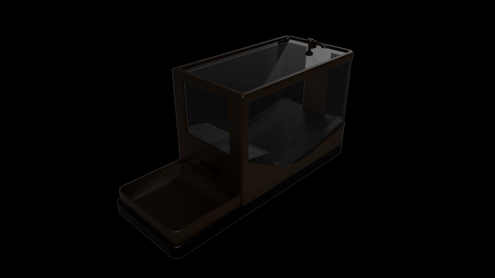

BLE IoT System (2025/26) — A complete IoT ecosystem featuring mechanical dispensing, custom load-cell circuitry, and ESP32 NimBLE firmware.

A complete IoT ecosystem featuring mechanical dispensing, custom load-cell circuitry, and ESP32 NimBLE firmware.
A working connected pet feeder prototype that feeds on schedule and confirms each portion by weight via automated digital calibration.